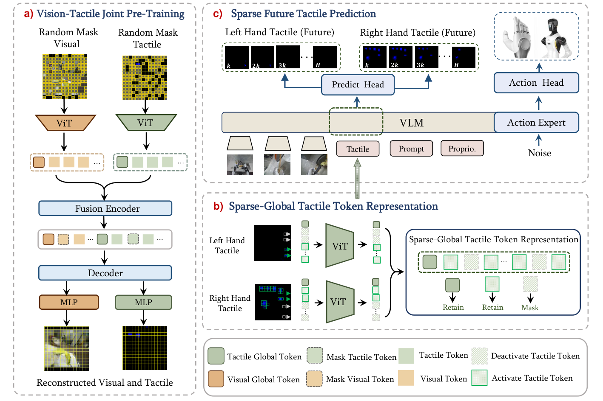

STAR
灵巧手的触觉多数时候是空的：先与视觉对齐，再只留被触发的 token 和一个全局 token。
STAR: Sparse Tactile Representation Learning in Vision–Tactile–Language–Action Models for Dexterous Manipulation
四项真机灵巧任务各 20 次试验，平均成功率 61%、完成率 79%；同数据微调但不用这套配方的 π₀.₅ 是 44% 与 61%。
01这篇要解决什么？
这篇问的是同一个问题的另一半：手上贴着几百个触点时，难处不是没有信号，而是信号绝大多数时刻为零。作者把稀疏拆成空间、时间、信息三种，分别用联合预训练、按接触门筛 token、预测多个未来时刻来对付。值得学的是这三件事各自针对哪一种稀疏。
02先看一个场景
让机器人用拇指和食指把一只耳机翻转 180 度。指尖此刻在做什么，相机基本看不见——手指自己挡住了接触点，画面上翻到一半和翻过去几乎一样。可就算把几百个触点全接进策略也不解决问题：绝大多数时刻它们读数为零，模型很容易学会把这一路当成常数忽略掉。
03方法怎样运转？

- 01
先造平台再采数据
双臂轮式机器人，每只手 10 个驱动自由度、共 16 个，掌心与手指内侧贴 268 维压阻式触点，指缘没有覆盖。遥操作用骨架式手套，重定向用 DexPilot，作者关掉自动闭合、补上朝向约束。最后采到 200 小时、10576 条轨迹、65 个任务，69.5% 需多指协同。
- 02
触觉画成图像，与视觉做掩码联合预训练
触觉按 T-Dex 的做法表示成图像：268 个触点按手上的空间布局摆进一张 224×224 的图，没有触点处填零。这张图与对应腕部 RGB 成对送进掩码重建预训练，各遮 75% 的 patch，左右手共用一个编码器。只在触觉上预训练会让模型学会一律预测零。
- 03
稀疏加全局：接触门只筛空间 token
策略训练时每只手的触觉图被编码成 196 个空间 patch token，另加一个可学习的全局 token，两手合计 394 个。接触门只作用在空间 token 上，token 内任一触点超阈值就保留，否则屏蔽。全局 token 恒保留，且不许注意视觉、语言与动作，反过来可以。
- 04
稀疏未来触觉预测作为辅助任务
训练时另加一项监督：在长 50 的动作时域上取第 10、20、30、40、50 步共五帧，由前缀输出的触觉 token 经 MLP 预测未来法向力。同样五帧的密集版本取第 1 到 5 步，30 Hz 下只覆盖 0.17 秒，稀疏版摊到 1.67 秒。两者的差异归因论文没有拆开。
- 05
基座是现成 π₀.₅，训练分两段
骨架直接用 π₀.₅：PaliGemma 的 Gemma-2B 主干加 300M 动作专家。因为换成灵巧手，动作维度从 32 改成 64、实际占 34 维，动作投影层被丢弃重初始化。先在 200 小时数据上微调 6 轮，再对每项任务用 100 条演示后训练 100 轮。
backbone = π0.5 检查点 (PaliGemma Gemma-2B + 300M 动作专家)
tac_enc = ViT，在自采 200 小时数据上与 RGB 做掩码联合重建（各遮 75%）
# 动作投影层从 32 维丢弃重初始化为 64 维，其中 34 维实际使用
for hand in (左, 右):
S = tac_enc(tactile_image(hand)) # 196 个空间 token + 1 个全局 token
S = [t for t in S if 任一触点 > 接触阈值] + [global_token(hand)]
prefix = 三路图像(768) + 语言与离散状态(≤350) + 触觉(394)
# 全局 token 不注意视觉/语言/动作，它们可以注意它
A = flow_match(expert, prefix, steps=10) # 长 50：末端位姿 + 手指关节，相对当前状态
execute(A) # 执行后没有成功检测，也没有重试逻辑
# 训练时另有辅助头：从触觉 token 预测第 {10,20,30,40,50} 步的法向力方法与结果的原文定位见本页引用。
04跟着这个场景走一遍
教学推演：回到上面的场景。第一步，能做这件事的前提是有数据：作者先把平台造出来——双臂轮式机器人、每只手 10 个驱动自由度、掌面与指内侧 268 个压阻触点，遥操作用骨架手套加改过的 DexPilot 重定向——才采到 200 小时、10576 条轨迹。第二步，触觉被画成一张图：268 个触点按它们在手上的位置摆进 224×224 的画面，没有触点的地方填零。这张图和腕部 RGB 一起做掩码重建，各遮 75%；若只在触觉上做，模型会发现一律输出零就能得分，加上视觉这条捷径才不成立。第三步，翻转耳机时真正有读数的只有拇指与食指的那几个触点。接触门把没超过阈值的空间 token 全部屏蔽，只让被触发的进前缀，另外保留每只手一个全局 token；这个全局 token 不许去注意视觉与语言，只允许别人注意它，为的是让它始终代表触觉本身。第四步，训练时还要求模型从这些 token 预测第 10、20、30、40、50 步之后的法向力，摊在 1.67 秒上而不是挤在最近 0.17 秒里，后者太容易靠外推蒙对。第五步，推理时十步 Euler 去噪出一块动作，落成末端位姿与手指关节位置。做不到的事同样清楚：耳机翻到一半掉了，策略内部没有任何模块会发现；而小指与无名指的指缘根本没贴触点，多物体抓取的成功率因此只有 40%，作者把这一条写进了局限。
05实验到底表现怎样？
四项真机灵巧任务是耳机翻转、叠书取书、明信片取放与多物体抓取，每种方法各 20 次试验，初始摆放随机但各方法共用同一批。评测用的物体从 200 小时预训练数据里留出，每项任务另用 100 条演示后训练。下表取自表 I 与表 III。
作者报告的实验结果 · v2
| 设置 / 方法 | 平均成功率 | 平均完成率 |
|---|---|---|
| π₀.₅ 官方权重直接后训练（表 I，四项） | 28% | 44% |
| π₀.₅ 加 200 小时数据，不用 STAR（表 I，四项） | 44% | 61% |
| STAR 完整配方（表 I，四项） | 61% | 79% |
| 去掉触觉输入（表 III，两项均值） | 45% | 61% |
| 推理时屏蔽触觉（表 III，两项均值） | 53% | 69% |
原始证据：数据与平台：§IV-A ↗ · 训练配方：§IV-B ↗ · 基线对比：表 I ↗ · 消融：表 II–III ↗
61% 的均值盖住了任务间的落差：明信片取放 85%，耳机翻转 65%，多物体抓取只有 40%，而后者完成率却有 72%，作者归因于小指与无名指的指缘没贴触点。表 III 还显示去掉触觉后叠书取书的成功率不变，触觉并非在每项任务上都带来收益。
06收益来自哪里，又停在哪里？
消融与机制证据
表 II 在两项任务上逐个拆开：去掉全局 token 平均成功率从 60% 掉到 30%，去掉稀疏筛选掉到 33%，去掉视触觉联合预训练掉到 38%，三者一起去掉是 35%。未来触觉预测影响最小，去掉仍有 53%，换成密集的近期五帧反而降到 48%。
结论的适用边界
模型来源分得很清楚。现成的是 π₀.₅ 检查点，PaliGemma 的 Gemma-2B 主干加 300M 动作专家，流匹配目标与去噪步数原样保留；掩码自编码架构、M2VTP 的联合预训练做法、DexPilot 重定向与 T-Dex 的触觉成像也都是借来的方法。自训的是触觉编码器本身，在自采数据上用 batch 1024 训 15000 步约一轮，此外还有可学习的全局 token、投影层、未来力预测头，以及整个策略的两段训练——200 小时上 6 轮加每任务 100 轮。真正的前提成本是数据与硬件：200 小时、10576 条轨迹、65 个任务全部自采，依赖骨架手套、改过的重定向算法与一整套双臂灵巧手平台，而论文只给了 batch size 与轮数，卡型与卡数没有给出。基线口径也要留意：GR00T N1.7 记零是因为收敛不好、出现不安全振荡而被中止试验，这个零不宜当作它的能力上限。
07放回全书的脉络
与 N₀-VTLA 并排读：一个把触觉压成预测目标不进前缀，一个把触觉筛进前缀再预测未来力；对照 π₀.₅ 则可见两篇换的都是条件而不是编排。
08把阅读变成一个小研究
先统计自己数据里触点的激活比例，再按接触门屏蔽未激活 token，比较前缀长度与成功率的变化。
先自己回答：这项实验怎样才有解释力？
若屏蔽后成功率不降反升，说明冗余 token 确实在稀释注意力；若明显下降，要先查阈值是不是把弱接触一并滤掉了。
- 用自己的话说出这篇改变了哪个模块。
- 画出它的输入、输出和一次失败如何被处理。
- 复述一个结果，同时说清基线、指标与实验条件。这一问不给答案，材料在第 05 节。
先自己答，再看前两问的参考答案
这篇改了哪个模块改的是触觉这一路输入怎样被表示与被监督，落点全在策略内部：触觉先画成图像、与视觉做掩码重建联合预训练，再按接触门只保留被触发的空间 token，另补一个每只手一个的全局 token，训练时额外预测五个未来时刻的法向力。没改的是策略骨架——π₀.₅ 的主干与动作专家、流匹配目标、长 50 的动作块、十步去噪一概照旧，只因为换成灵巧手才把动作投影层从 32 维改成 64 维重初始化。策略外面没有规划器、没有技能库，也没有任何运行时的验证环节。
输入、输出与一次失败如何被处理输入是三路 RGB，左右腕部各一路加头顶一路，两只手的触觉图像，离散化后写进语言提示的 64 维本体状态，以及一句人工标注的任务级指令；整条序列 1562 个 token，其中视觉 768、触觉 394、语言最多 350、动作后缀 50。输出是长 50 的动作块，内容是相对当前状态的手臂末端位姿与手指关节位置，由十步 Euler 积分从高斯噪声解出，直接下发执行。训练时另有一路未来法向力预测头，推理时不使用。失败这一条要明确写出来：这是一个端到端策略，执行之后没有成功检测，没有验证器，也没有重试逻辑。耳机没翻过来、书没抽出来，系统内部没有任何模块会发现，纠正只能寄望于下一块动作在新观测下自然改变。评测里的完成率是人按子任务清单事后统计的，不是策略自己读得到的信号。触觉传感器的噪声、漂移与缺失触点，论文把它们列进未来工作，当前没有处理。
灵巧手的触觉多数时候是空的：先与视觉对齐，再只留被触发的 token 和一个全局 token。
↗带着位置回到原文
首发日期用于时间排序；以下方法与结果对应 v2。数据为论文作者报告，本讲义没有独立复现实验。
QA就这一页提问或讨论
对某个数字、某条边界或某个推演有疑问，欢迎直接留言：讨论按页面分开，回复会保留在 XinrunXu/awesome-agentic-robotics-papers 的 Discussions 里，需要一个 GitHub 账号。